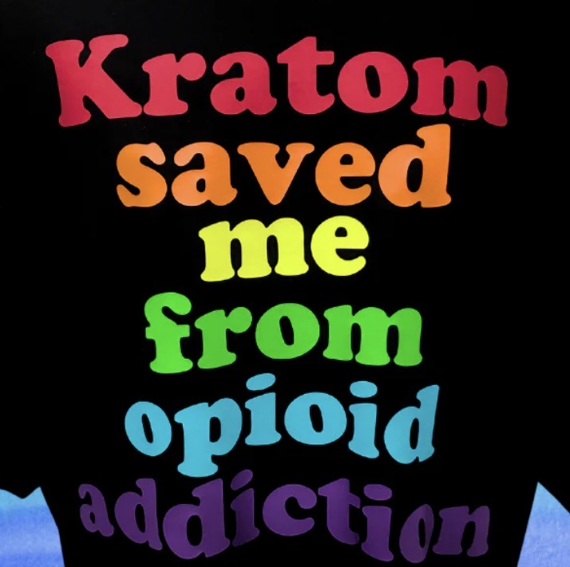

If you oppose commercial kratom, you've probably heard the accusation.
It is an emotionally powerful argument. It immediately shifts the conversation away from public policy and onto personal suffering. Suddenly, legislators are no longer debating whether an imported psychoactive product belongs in gas stations, vape shops, smoke shops, and convenience stores. They're being asked to judge someone's pain.
And that's precisely why it works.
Pain is real. Chronic illness is real. Addiction is real. Those who suffer deserve compassion.
But compassion should never become a substitute for sound public policy.
Increasingly, personal stories have become the primary argument for keeping kratom on the market. The message is simple: because some people believe kratom has improved their lives, the rest of society has an obligation to accommodate it.
That is a remarkable proposition.
Because accommodating kratom doesn't simply mean allowing adults to make private choices.
It means asking everyone else to pay for it.

North Carolina recently showed exactly what that looks like.
Its fiscal analysis for House Bill 468 reads less like a consumer protection bill and more like the blueprint for building an entirely new government bureaucracy around a product that didn't need to exist in the first place.
North Carolina HB 468 — The True Cost of Regulation
- Approximately $5 million in startup costs
- More than $3.2 million every year in ongoing regulatory and enforcement expenses
- Twenty-five new government employees
- Nineteen additional sworn law enforcement officers
- A brand-new permitting section
- A legal section
- A licensing system costing approximately $3 million to develop
- Roughly 2,500 inspections every year
- Thousands of laboratory tests on kratom products
Read that again.
This isn't regulating milk.
It isn't regulating aspirin.
It isn't regulating bread.
This is the cost of creating an entirely new enforcement infrastructure for an imported psychoactive product.
Why?
Because advocates insist it has to remain available.
The irony is difficult to ignore.
Many of the same organizations arguing that kratom is safe also argue it requires an extensive regulatory system to keep consumers protected. If a product requires new licensing divisions, attorneys, inspectors, investigators, laboratory testing, civil penalties, criminal enforcement, and millions of dollars in government oversight, perhaps the better question is whether it belongs on store shelves at all.
Even more striking is who ultimately bears the burden.
Not just kratom users.
Everyone.
The parent buying groceries.
The retiree on a fixed income.
The young couple paying property taxes.
The business owner.
The nurse.
The mechanic.
The teacher.
The people who never asked for kratom to be sold in their neighborhoods are nevertheless expected to finance the government apparatus required to manage it.
Supporters often respond that licensing fees paid by the industry will eventually offset many regulatory costs. The North Carolina fiscal analysis projects that license revenue could cover ongoing expenses after the program is established. But that same analysis also notes millions of dollars in startup costs before licensing revenue begins, meaning the state would need to absorb those initial expenses or provide additional appropriations.
That still leaves a larger question unanswered.
Why should the public have to build an entire regulatory system for a product that many believe should not have entered commerce in the first place?
The FDA has long maintained Import Alert 54-15, allowing many imported kratom products to be detained without physical examination because they appear to violate the Federal Food, Drug, and Cosmetic Act. Yet instead of asking whether this product belongs in American commerce at all, states are being asked to create permanent bureaucracies to oversee its manufacture, testing, distribution, licensing, and sale.
That is an extraordinary shift in priorities.
Meanwhile, communities are expected to accept another psychoactive substance becoming commonplace in gas stations and vape shops.
- Another product parents have to explain.
- Another product schools have to address.
- Another product police officers have to recognize.
- Another product emergency departments have to evaluate.
- Another product poison centers have to monitor.
- Another product taxpayers have to finance.
All because some people believe it helps them.
Personal stories deserve empathy.
They deserve research.
They deserve serious conversations about pain management and addiction treatment.
But they do not automatically answer the question of what products should be commercially sold in every neighborhood in America.
Public policy cannot be built on anecdotes alone.
If every drug with passionate supporters were entitled to permanent retail access because someone claimed it changed their life, there would be no limiting principle at all.
That isn't compassion.
It's policymaking by testimonial.
And that's where the debate has gone off course.
Compassion has become an argument against scrutiny.
Personal suffering has become a shield against legitimate policy questions.
Pain has become a political weapon.
The question legislators should be asking is not whether someone sincerely believes kratom helped them.
The question is much simpler.
Why should millions of Americans who never wanted kratom in their communities be expected to pay for its regulation, its enforcement, and its consequences?
That isn't a question about compassion. It's a question about fairness.